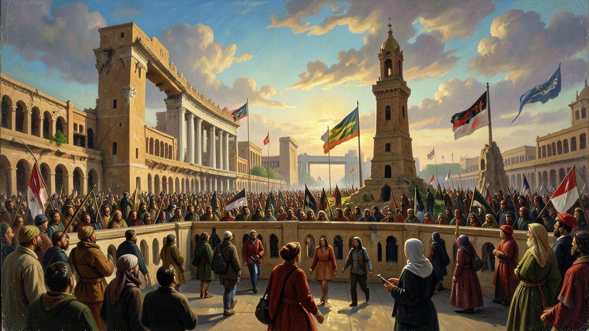
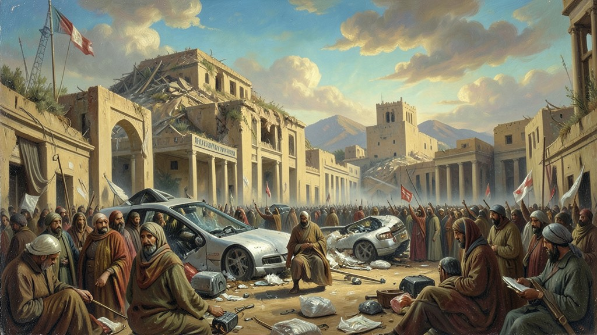

"Em 2010, um vendedor de frutas na Tunísia ateou fogo ao próprio corpo, faísca que incendiou ditaduras árabes de décadas através das telas de celulares."
A **Primavera Árabe** foi uma onda de protestos pró-democracia que varreu o Oriente Médio e o Norte da África a partir de 2010. O movimento começou na **Tunísia**, após a autoimolação de Mohamed Bouazizi, um jovem que teve suas mercadorias confiscadas pela polícia. Através do uso massivo de **Redes Sociais** (Facebook e Twitter), as populações conseguiram furar a censura e organizar manifestações gigantescas na Praça Tahrir, no **Egito**, e na **Líbia**, derrubando ditadores como Hosni Mubarak e Muammar Gaddafi, que estavam no poder há décadas. No entanto, o sonho democrático transformou-se no 'Inverno Árabe'. Na **Síria**, os protestos tornaram-se uma guerra civil sangrenta que já dura mais de dez anos e gerou a maior crise de refugiados do século XXI. O vácuo de poder em países como o Iraque e a Síria permitiu a ascensão do **Estado Islâmico (ISIS)**. O ENEM costuma cobrar a Primavera Árabe como o primeiro grande exemplo de 'Ciberativismo', o questionamento dos regimes autoritários no mundo muçulmano e as tensões geopolíticas entre os EUA, a Rússia e as potências regionais (Irã e Arábia Saudita) nesse xadrez de guerra.
1. O Estopim Tunezino: Bouazizi e o Fogo
A Tunísia vivia sob a mão de ferro de Ben Ali por 23 anos. A pobreza e o desrespeito policial eram a regra. Quando o jovem Bouazizi protestou da forma mais radical possível, o povo tunezino percebeu que não tinha mais nada a perder. A 'Revolução de Jasmim' foi a primeira vitória da primavera árabe, provando que um povo unido contra a inflação e a humilhação podia expulsar um ditador para o exílio em semanas.

2. Egito e a Praça Tahrir: O Poder do Hashtag
O Egito de Mubarak caiu em 18 dias. A Praça Tahrir tornou-se o Coração do Mundo. Jovens egípcios usavam o Facebook para marcar os locais dos protestos e contornar os bloqueios policiais. As imagens das multidões pedindo 'Pão, Liberdade e Dignidade Social' forçaram o exército egípcio a abandonar Mubarak. Foi a prova definitiva de que a internet mudaria para sempre a forma de se fazer revoluções.

3. O Inverno Árabe: Caos na Líbia e Síria
A queda de Gaddafi na Líbia não trouxe paz, mas uma guerra de milícias pelo controle do petróleo. Na Síria, o ditador Bashar al-Assad preferiu bombardear seu próprio povo a entregar o poder. O país tornou-se um palco de guerra entre a Rússia (aliada de Assad) e os EUA (aliados dos rebeldes). A destruição de cidades milenares como Aleppo é a cicatriz desse fracasso democrático no Oriente Médio.

4. O Estado Islâmico (ISIS) e o Califado do Terror
No rastro da destruição na Síria e no Iraque, surgiu o Estado Islâmico. Eles usaram a mesma tecnologia de comunicação das revoluções (redes sociais) para recrutar soldados no mundo todo e espalhar vídeos de decapitações e destruição de patrimônio histórico. O ISIS tentou recriar um Califado medieval com as armas e o marketing do século XXI, forçando uma nova intervenção militar ocidental na região.
5. A Crise dos Refugiados: O Mar da Morte
Milhares de sírios, iraquianos e líbios tentaram fugir da guerra em barcos precários pelo Mediterrâneo. A imagem do pequeno Aylan Kurdi morto em uma praia turca chocou o mundo. A Europa foi obrigada a lidar com milhões de imigrantes, gerando uma onda de xenofobia e o crescimento da extrema-direita conservadora em países como a Hungria e a França. A primavera árabe acabou redesenhando o mapa social do planeta.
TEXTO DE APOIO
Com as irrupções populares avassaladoras de 2011 batizadas globalmente por “Primavera Árabe”, presenciou-se a erupção do imensurável descontentamento social da juventude dos países magrebinos e médio-orientais vitimizados por um regime burocrático gerontocrata extremamente paralisado. Iniciado através do imolação ritual de sacrifício por um trabalhador de feira na humilde Tunísia contra as inescrupulosas violências policiais do desgoverno do ditador Ben Ali, logo uma tempestade anti-oligarca de desocupação endêmica incendiaria a esfera praiana e metrópole do Nilo e de Damasco.
A grande virada que confunde a complexidade dessa insurgência deveu-se primordialmente ao emprego atípico – na ótica acadêmica e no diagnóstico inicial –, aos usos ativadores e disruptores não estruturais das Tecnologias Digitais Contemporâneas. Como relata os estudos acadêmicos e do ciberativismo como em Manuel Castells – através do vetor não hierarquizado de mídias conectivistas das redes sociais de mobilização (Plataformas Digitais) organizando, propagandeando e escapulindo à rigorosa panóptica da milícia controladora tirânica.
Para estudantes com avaliações complexas de Geografia Crítica como a referenciada pelo Exame, torna-se fulcral que essa euforia democrático inicial deve ser lida a longo prazo num retrospectivo sombrio; no apagar destas labaredas democráticas as consequências evidenciaram de maneira pungente revés militar autocrático ditatorial de retaliação e de sanguinárias guerras fraturadoras extremas do qual testemunharam tragicamente o fraticídio generalizado no Estado Sírio (Bashar Al-Assad e Daesh) e o fracassado da infraestrutura e estabilidade da falida territorial República do Iêmen e da Líbia contemporânea.
Mini Games
Arcade Histórico
Escolha um dos jogos abaixo para fixar o aprendizado deste módulo: